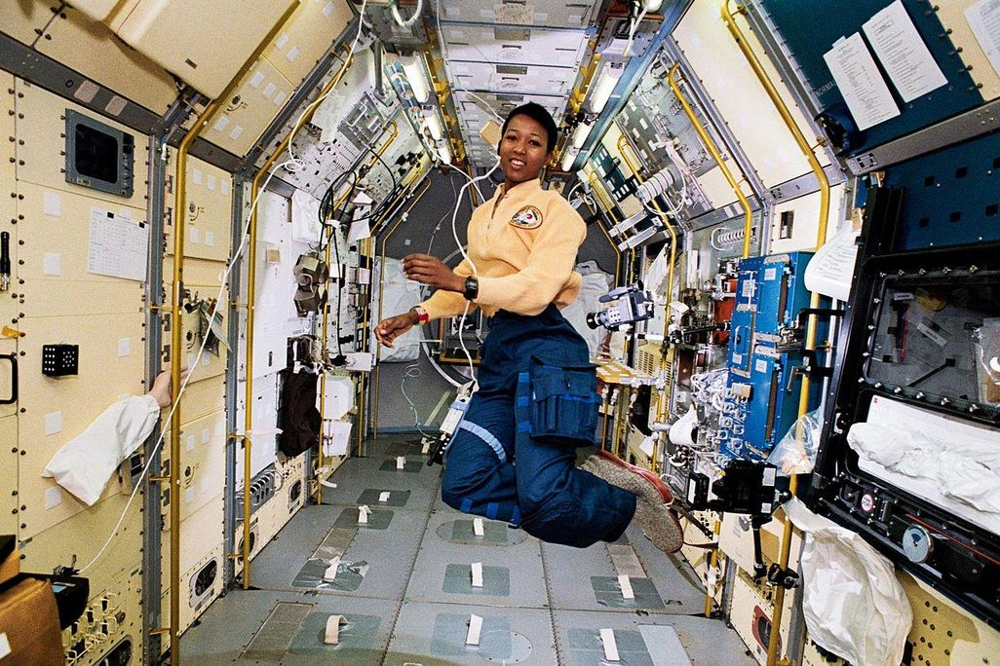

Greetings, future astronauts, space explorers, scientists, and mathematicians! Meet a few remarkable women who have made remarkable advancements in our understanding of what’s out there beyond Earth. Each of these heroes have started off as a beginner, and through hard work, perseverance and a passion for astronomy they have made incredible achievements.
First Black woman in space in 1992 aboard the Space ShuttleEndeavor

Videos